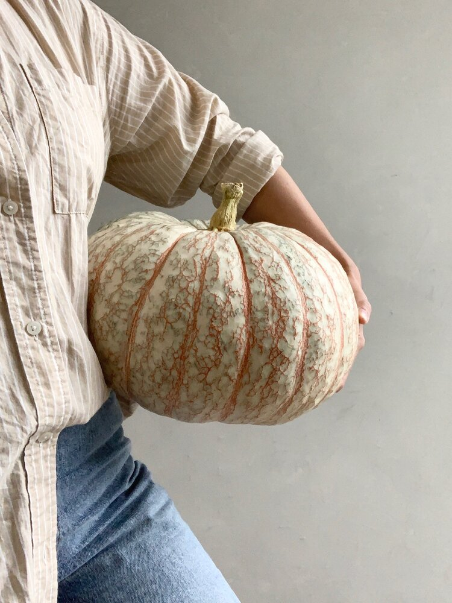
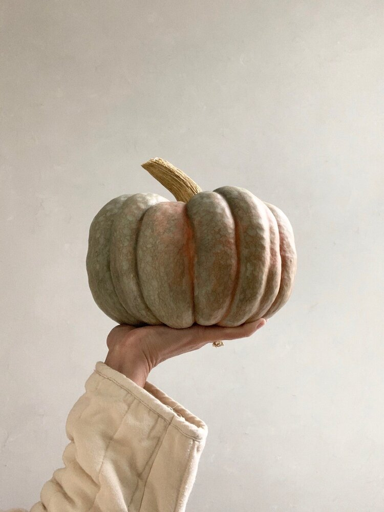
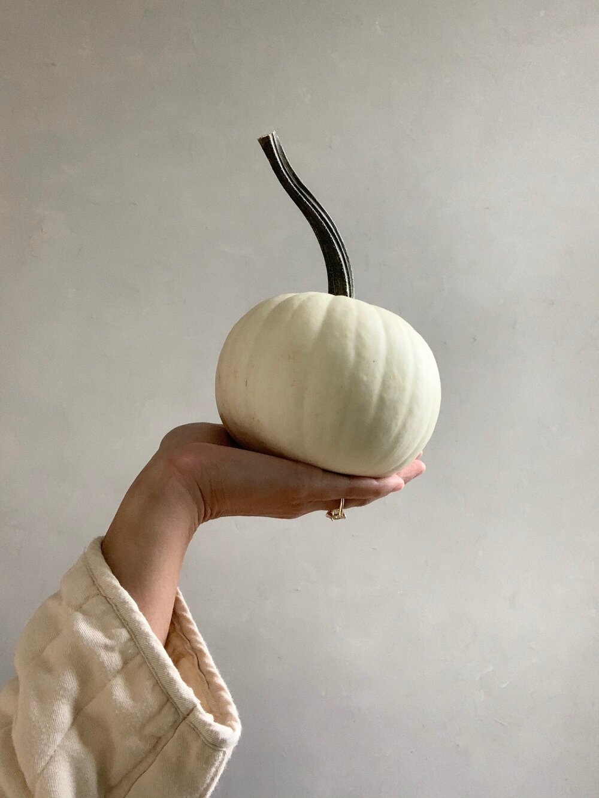

By altering the size of the browser window, you will see information of the three varieties of pumpkins!
A truly distinctive ornamental pumpkin that has great decorative potential. Large vines produce white fruit that are laced with reddish colored veins. The pumpkins resemble a bloodshot eye and weigh 20 to 25 lbs.
The thick flesh is orange and surrounds a central cavity that contains some pulp and many flat, tear-drop shaped, cream-colored seeds. When cooked, Porcelain Doll squash is tender with a smooth texture and a sweet flavor, averaging 16-24 pounds.
Blanco produces a true white colored pumpkin with shallow ribs. Unlike others, it shows moderate resistance to color change when exposed to sun and light frosts. Its 4 to 6 lb. fruit have a uniform round shape and long green handles.
